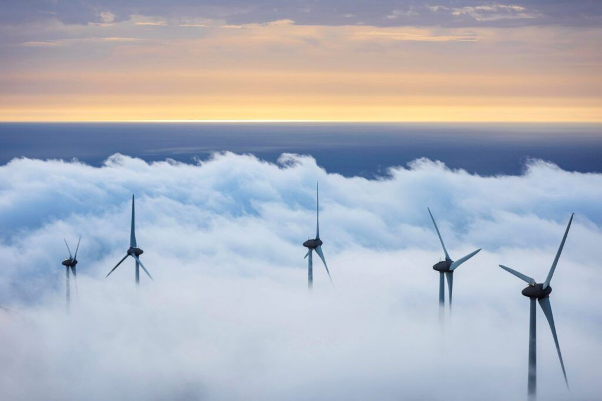
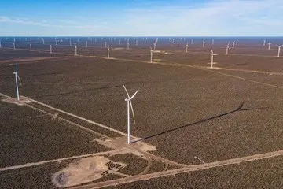
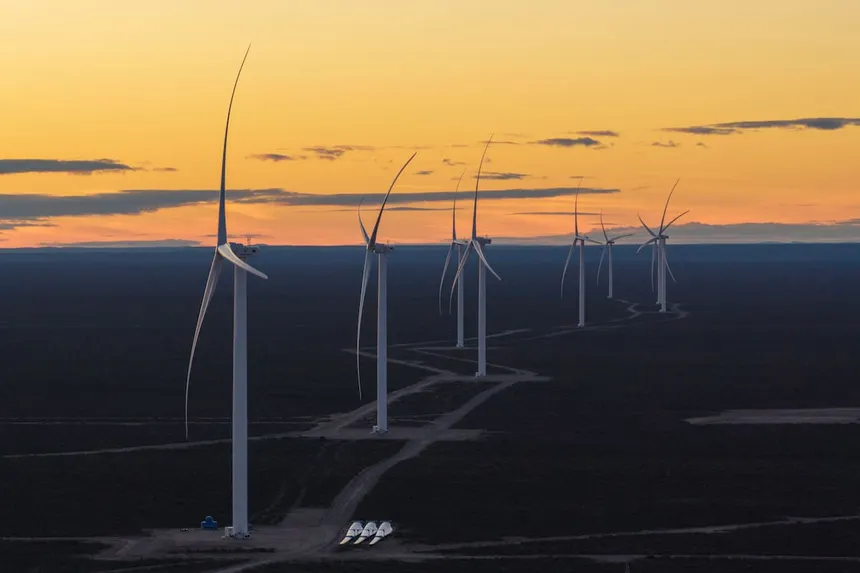
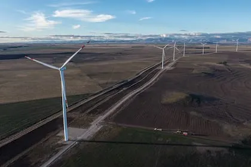

Las casas y los árboles frenan el viento cerca del suelo.
Energía
Eólica
1 · Principios y funcionamiento físico
Del viento a la electricidad
01
Vientoenergía cinética02
Aspas y rotoraspas + buje03
Multiplicadoraengranajes: más rpm04
Generadorimanes y bobinas05
Corriente alternaonda senoidal06
Rectificadorcontinua · o a la red1 · Principios y funcionamiento físico
Una energía de miles de años
01
Barcos y molinos
El viento ya movía barcos y molinos que molían grano.
02
Campos de aerogeneradores
Hoy hay muchos en Argentina.
03
Offshore
Aerogeneradores instalados directamente en el mar.
1 · Principios y funcionamiento físico
En altura, lejos de los obstáculos
A mayor altura, el viento llega a las aspas y las hace girar.
1 · Principios y funcionamiento físico
Del viento al generador
Rotor
El viento hace girar las aspas y el buje. El movimiento comienza lento y con mucha fuerza.
Caja multiplicadora
Los engranajes transmiten el giro y aumentan la velocidad: suben las rpm y disminuye el torque.
Generador
Los imanes giran frente a bobinas de cobre y convierten el movimiento en energía eléctrica.
1 · Principios y funcionamiento físico
Dentro del generador
01Giran los imanes→02Cambia el flujo magnético→03Se induce una tensión→04Circuito cerrado: corriente
1 · Principios y funcionamiento físico
Corriente alterna
1 · Principios y funcionamiento físico
De alterna a su destino
Corriente alterna
Para usar o almacenar
Rectificador
↓
Corriente continua
↓
✦Luces
▰Baterías
Para entregar a la red
Se acondiciona
↓
ϟRed eléctrica
2 · Ventajas, desafíos e impacto ambiental
Ventajas de la energía eólica
Renovable
El viento no se agota y está disponible en gran parte del planeta. Es autóctona: favorece la independencia energética.
Limpia
No contamina directamente al producir electricidad.
Menos fósiles
Reduce el uso de petróleo y carbón.
Genera empleo
Crea puestos de trabajo y desarrollo local.
Mantenimiento
Necesita poco mantenimiento y sus instalaciones tienen una vida útil prolongada.
2 · Ventajas, desafíos e impacto ambiental
Desafíos de la energía eólica
Depende del viento
Solo genera donde y cuando sopla: los parques deben ir donde el viento predomina.
Costo inicial
La instalación es costosa.
Espacio
Necesita bastante espacio.
Almacenamiento
Es difícil almacenar la electricidad.
Ruido
Puede generar ruido.

2 · Ventajas, desafíos e impacto ambiental
Impacto ambiental
01
Puede afectar a aves y murciélagos.
02
Los parques pueden modificar el paisaje.
03
Fabricar y transportar los equipos genera contaminación.
04
Algunas partes son difíciles de reciclar.
Repsol: las palas pueden repararse o reutilizarse como materia prima, y los parques se instalan en zonas despobladas tras un estudio.
Por eso es clave estudiar dónde se instalan los parques
3 · Consumo y parques en Argentina
Argentina en números
Referente regional en energía eólica: sus parques superan la media mundial gracias a la estabilidad de sus vientos.
68
parques eólicos en operación comercial
+4.200
MW generados: la tecnología líder de la matriz renovable
40–50%
factor de capacidad (promedio mundial: ~35%), con picos de más del 80% en primavera-verano
Provincias principalesChubutBuenos AiresSanta CruzLa Rioja
3 · Consumo y parques en Argentina
Los seis parques principales
Aluar · Puerto Madryn, Chubut582
Mataco–San Jorge · Bs. As.276
Puerto Madryn–Genneia · Chubut222
Los Teros · Azul, Bs. As.175
Arauco · La Rioja150
Bicentenario · Santa Cruz126
Potencia en MW

Aluar: el complejo más grande del país, destinado a abastecer la producción de aluminio.
3 · Consumo y parques en Argentina
Fichas de los parques
Aluar
582 MW
Puerto Madryn, Chubut. El más grande del país; abastece la producción de aluminio.
Mataco–San Jorge
276 MW
Tornquist, Buenos Aires. El de mayor capacidad de la provincia.
Puerto Madryn–Genneia
222 MW
Chubut.
Los Teros
175 MW
Azul, Buenos Aires.
Arauco
150 MW
La Rioja. Desarrollador del NOA; hoy suma capacidad híbrida con energía solar.
Bicentenario
126 MW
Jaramillo, Santa Cruz.
3 · Consumo y parques en Argentina
Galería de parques eólicos



3 · Consumo y parques en Argentina
Del viento a la red
01
Argentina tiene un recurso eólico excepcional y una fuerte inversión privada.
02
Pero el SADI (Sistema Argentino de Interconexión) no tiene capacidad suficiente para absorber y transportar toda esa energía.
03
Solución: la «era del almacenamiento a gran escala». Baterías de alta capacidad guardan el excedente cuando la red se satura y lo liberan cuando la demanda se dispara.
4 · Historia en Argentina
Una historia en seis hitos
Años 80 y 90: nacen los primeros proyectos
1994
Antonio MoránParque en Chubut: el primero comercial del país.
1998
Ley 25.019Primera ley de fomento, frenada por la crisis de 2001.
2006
Ley 26.190Fijó la meta inicial del 8% de energía renovable.
2009
Plan GENRENPrimer intento del Estado de licitar renovables a gran escala; resultados limitados.
2015
Ley 27.191Creó el fondo FODER y la meta obligatoria del 20% para 2025.
2016
RenovArEl gran punto de inflexión: licitaciones internacionales con inversiones millonarias.
HitosLeyes
4 · Historia en Argentina
Infraestructura y desafíos actuales
01
Tecnología y crecimiento: se pasó de molinos pequeños a gigantescos aerogeneradores modernos.
02
La Patagonia tiene los mejores vientos, pero faltan redes de alta tensión.
03
Por eso hoy lidera Buenos Aires, cerca de Bahía Blanca y de los centros de consumo.
04
Desafío: ampliar las líneas de transporte eléctrico para evacuar toda la energía que se produce.
Gracias
Estudiantes: Bernal Santino, Montaño Bautista, Arcuri Lucas y Berraquero Tiziano.
No sean malos, sígannos en IG: @bernalsantt, @bauurivarola, @lucassarcuri y @berraquerotiziano.
No sean malos, sígannos en IG: @bernalsantt, @bauurivarola, @lucassarcuri y @berraquerotiziano.